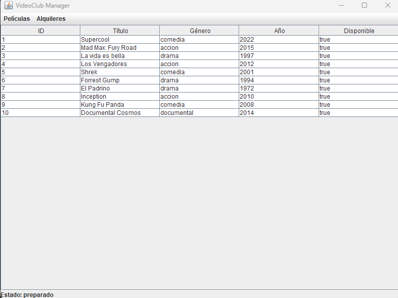
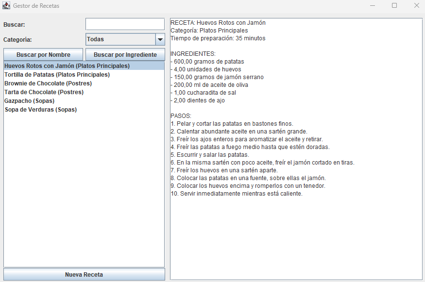
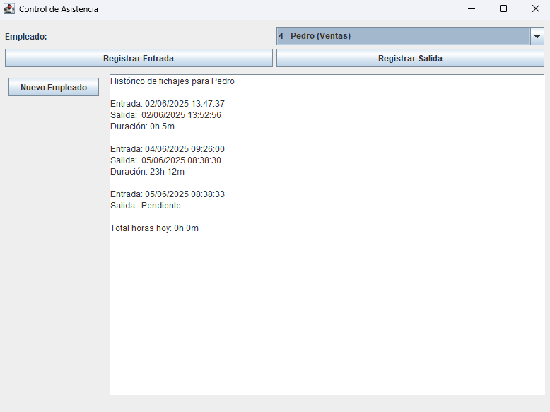
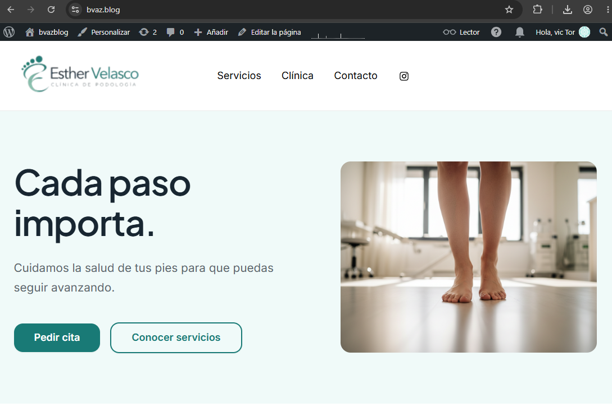

DESARROLLADOR EN FORMACIÓN
Hola, soy
Brandon Castrillon
Estudiante de 1.º DAM en Málaga.
Apasionado por el desarrollo de software, las bases de datos, los sistemas y las nuevas tecnologías. Aquí puedes ver algunos de mis proyectos, mis habilidades y un poco más sobre mí.
MIS TRABAJOS
Mis proyectos
Proyectos realizados durante mi formación. Cada tarjeta incluye una descripción, las tecnologías utilizadas y un acceso al repositorio.




Esther Velasco
Desarrollo de una página web para una clínica ficticia de podología, trabajando la estructura, el diseño visual y la organización de contenidos para ofrecer una experiencia de navegación clara y responsive.